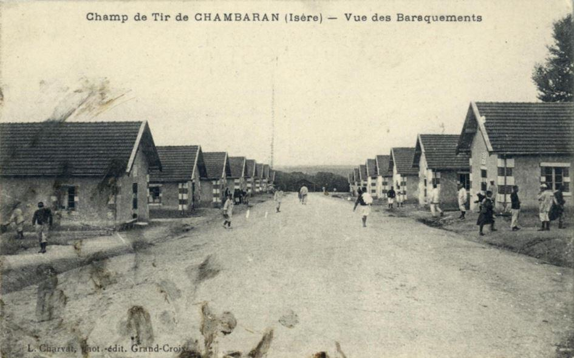
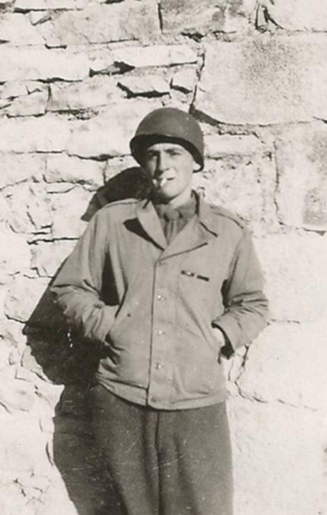

Normandie-Niemen… Résistance… Fraternité des peuples français et russe… Tant de mots qui font battre les cœurs des patriotes français et russes. La France a perdu la ligne Maginot et s'est laissée piétiner par les bottes allemandes résonnant sur les pavés centenaires de l'allée centrale des Champs aussi bien que le long de l'avenue de la Grande Armée. Mais la même France s'est rachetée en lançant un mouvement de Libération allant du Sud vers le Nord. Peu de gens le savent à l'étranger, mais il n'y a pas eu que le débarquement en Normandie. Un autre jour J s'est levé sur Marseille et les troupes françaises ont traversé la Méditerranée pour courir sus aux Allemands. Antoine De Saint-Exupéry faisait bien partie de ce contingent. Il fut mort lors d'un vol de reconnaissance à proximité de la Côte d'Azur à la veille de la grande offensive nationale.
Cette France-là se souvenait bien de la fraternité des armes avec les forces russes. De Gaulle en fut le chantre. Les rares témoins de cette époque restant encore en vie, sont bien là, à nos côtés pour nous faire part de leurs émotions d'antan. Écoutons-en un, plus que nonagénaire.
Combien de membres de la Résistance française restent encore de ce monde ? En a-t-on une idée ? La Russie glorifie ses héros nationaux et révère la mémoire de ceux qui ont sauvé la Patrie en péril. Il en a été de même pour la France. Dans n’importe quel village français vous trouverez un monument dédié à la Grande-Guerre. Mais la Seconde Guerre mondiale est moins connue par les citoyens. Bien que peu glorieuse c’en fut une et il y eut des gens qui se sacrifièrent pour les autres. D’aucuns partaient dans les chambres à gaz après les coups de filet nazis ; D’autres prenaient le chemin du maquis pour combattre contre l’envahisseur. Jean Feigelson fait partie de ses derniers. Ce nonagénaire bien portant nous a livré quelques souvenirs de sa jeunesse guerrière passée dans les rangs des combattants pour la liberté de la France.
Q : On sait que vous êtes un résistant de la France, vous avez contribué à la libération de la France, est-ce que vous pourriez nous raconter en quelques lignes votre aventure personnelle pour la libération de la France ? Quel a été votre rôle ?
Jean Feigelson. J’ai été dans le maquis de la Drôme, à partir de 1943-44 nous avons commencé à recevoir des parachutages d’Angleterre, la Royal Air Force nous envoyait des avions et nous parachutait des armes et nous nous sommes préparés pour la libération et nous avons vu à partir d’avril 1944 que la Libération viendrait par le Midi de la France, puisqu’il y avait des bombardements sur les villes du sud de la France et c’est ce qu’il s’est passé: le 15 août 1944, l’armée française et l’armée américaine, il y avait trois divisions américaines: la 3ème, la 45ème et la 36ème ont débarquées sur les côtes de Provence.
Nous, nous étions dans le maquis au niveau de la vallée du Rhône en face de Montélimar et nous avions à assurer la sécurité pour que les troupes allemandes ne remontent pas par la vallée du Rhône vers la Drôme et d’autre part, nous devions assurer la sécurité vis-à-vis du Vercors où des troupes allemandes avaient été parachutées.
C’étaient des combats très sporadiques, on n’a pas fait des choses énormes, mais c’est là où j’ai eu l’occasion d’abattre un avion allemand.
Q. : Comment l’avez-vous abattu ?
Jean Feigelson. Au fusil mitrailleur.
Q. : Comme ça ? Etait-ce un intercepteur ? Un bombardier ?
Jean Feigelson. Oui, c’était un chasseur bombardier Junkers 88.
Q. : Avez-vous été décoré pour cet exploit ?
Jean Feigelson : Oui, j’ai reçu la croix de guerre et la médaille militaire.
Q. : Avez-vous pris part à d’autres combats avant la libération ?
Jean Feigelson : Ensuite nous avons occupé Montélimar, puis nous avons été formé comme bataillon de chasseurs alpins après un entrainement d’un mois au camp de Chambaran dans l’Isère où nous avons suivi le stage des commandos des chasseurs alpins, puis on nous a envoyé tenir le front des Alpes face à l’Italie où il y avait des troupes allemandes, les allemands occupaient le nord de l’Italie et on a eu un front où l’on faisait des patrouilles sur les montagnes autour du Mont-Cenis.
Il y avait notamment une montagne qui était très désagréable qui s’appelait le mont Froid où il faisait horriblement froid parce que les nuits étaient glaciales, il faisait -30, le jour il faisait meilleur. Notre rôle consistait à intercepter les patrouilles allemandes, qu’essayaient de nous attaquer. C’est là que j’ai eu l’occasion de rencontrer les soldats russes et de me lier avec eux, ils ont d’ailleurs été malheureusement tués tous les quatre.
Q. : D’où arrivaient ces soldats ? Pourtant il n’y avait pas de troupes russes dans cette région.
Jean Feigelson : C’étaient des Russes qui avaient été fait prisonniers par les allemands, les Allemands les avaient embauchés dans l’armée allemande et ils avaient déserté pour passer chez les Français. Notre commandant les a pris dans son unité en attendant de pouvoir les renvoyer en Russie. On leur a donné des uniformes français. C’est moi qui ai eu la surprise de découvrir des soldats russes sur le front des Alpes. J’ai d’ailleurs écrit un article là-dessus qui est paru dans le Journal de l’armée française.
Q. : Etiez-vous nombreux dans votre unité ?
Jean Feigelson : On était 2-3 milliers dans le maquis au moins et dans les Alpes ont a formé une division : il y avait 15 000 hommes, au moins.
Q. : Qui furent les premières troupes à arriver, les françaises ou les américaines ?
Jean Feigelson : Les Américains ont été les premiers à débarquer et ils ont été suivis par les Français. Les Américains étaient plus motorisés que les Français et ils ont filé sur la route des Alpes pour prendre les Allemands à revers ; ils ont remonté la route des Alpes puis ils ont tourné à gauche vers l’Ouest puis ils se sont rabattus pour fermer la boucle et pour que l’armée allemande qui était là puisse être faite prisonnière.
Les Français pendant ce temps-là ont attaqué les garnisons de Toulon et de Marseille. Ils étaient commandés par le Général de Lattre de Tassigny, qui était notre chef.
Q. : Avez-vous continué à combattre, à pousser jusqu’à Paris ?
Jean Feigelson : Fin 1944, nous avons été expédiés en Alsace et nous avons tenu un petit front sur le Rhin, au-dessus de Strasbourg – Schutterwald. On faisait une guerre de patrouilles encore, on n’a pas fait des grands combats d’infanterie, mais on a fait des guerres de patrouilles contre les Allemands.
Q. : Pour vous la guerre s’est arrêtée à quel moment ? En 1945, au moment de la libération le 8 Mai ?
Jean Feigelson : Début mars 1945, on nous a mis au repos et on nous a démobilisés. Parce que l’armée a vu que la guerre se terminait et qu’on n’avait plus besoin de nous.
Q. : Sauf indiscrétion, quel était votre grade ?
Jean Feigelson : J’étais soldat de première classe, j’avais 20 ans à cette époque-là, j’étais tous jeune.
On n’a pas eu des combats énormes, ce n’était pas Stalingrad.
Commentaire de la Rédaction. On dit que les archives ont une longue mémoire. On a parfois tendance à oublier à quel point le secret de la vie privée n’existe pas. Il y a plus de 70 ans, Jean Feigelson combattait dans la Drôme mais à ses 90 ans passés, il n’est peut-être pas au courant que son nom comme d’ailleurs tous les noms des anciens combattants pour la liberté et l’indépendance de la France, a été soigneusement catalogué par les amoureux de l’histoire nationale. Voici ce que démontre sa fiche biographique parue dans le dévédérom sur La Résistance dans la Drôme – le Vercors :
En se souvenant de la guerre, les Russes se plaisent à répéter : « Rien ni personne ne seraient oubliés ! » Il se trouve que le nom de Feigelson devrait être gravé sur le monument en l’honneur des Résistants français. Nous avons apprécié aussi bien sa bravoure que son caractère réservé : il est évident que cet homme se considère comme quelqu’un qui n’a fait que son devoir. Dommage qu’il y ait si peu de Français qui restent fidèles à cet esprit qui a forgé la France.
Quoi qu'on en dise aujourd'hui les Français ne doivent jamais oublier que leur intégrité territoriale d'après la guerre, leur statut de vainqueur et le siège permanent au Conseil de Sécurité de L'ONU leur fut octroyés par Joseph Staline. Les Américains ne voulaient à l'époque que le partage de la France, à l'instar de l'Allemagne considérant Paris comme allié d’Hitler et point comme son ennemi. Ce miracle de reconnaissance historique de la vraie position du peuple français vaut bien celui de la Marne où les forces impériales russes eurent encore aidé la République Française. On espère que la France s'en souviendra et le jour où elle se remettra de ses malheurs, la Russie sera toujours à ses côtés.

Partager cette page